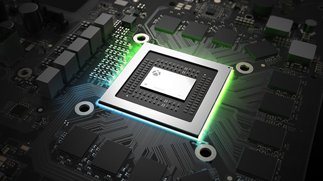
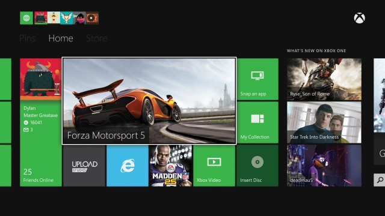
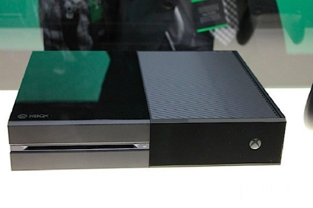
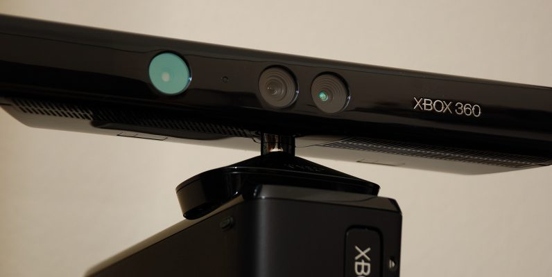

Разработка AMD, содержащая в себе восемь ядер, работающих на пока не названной тактовой частоте. Суть в архитектуре процессора: Microsoft, как и Sony, отошли от нестандартной архитектуры, использовавшейся в прошлом поколении приставок, в пользу архитектуры ПК. Это означает, что разработчики получат в своё распоряжение не только куда большую вычислительную мощь, но и сэкономят немало времени и сил при портировании игр с платформы на платформу. Порты теперь будут выполняться куда быстрее и выглядеть на порядок качественнее.

Долгое время игровые консоли Microsoft были искусственно оторваны от ПК не только аппаратно (архитектурой процессора), но и программно. В Xbox 360 используется Xbox OS, имеющая мало общего с обычной Windows, хотя когда-то разработчики брали код именно из Windows 2000, однако в итоге дело кончилось полной несовместимостью. В Xbox One Microsoft если и не решила эту проблему, то по крайней мере вплотную подошла к её решению: новая консоль работает одновременно под управлением специальной версии Windows 8 и прежней Xbox OS. Поэтому, если Вы хорошо знакомы с Windows для Пк, то ОС для коробки
На PS4 после каждой презентации появляется всё больше игр, способных самостоятельно продать консоль, а у Xbox One их становится всё меньше. Константами в случае с Xbox One остаются лишь Halo, Gears of War и Forza — но хочется, чтобы аналогия с плоским миром на трёх китах подходила для описания прошлого консоли, а не её будущего.

Это очень субъективно и одновременно не столь уж и важно, однако на наш взгляд дизайн самой приставки не удался. Разумеется, будучи реалистами мы не ожидали увидеть что-то невероятно-футуристическое, но и такой, будто склеенный из двух кусков, видеомагнитофон из 90-ых выглядит не слишком красивою.

Кому-то это может показаться смешным и абсурдным, но в случае с Xbox One волнение вполне обосновано. Ведь большую часть времени приставка подключена к интернету, при этом контроллер Kinect снимает вашу комнату высококачественной камерой, а микрофон в нём не отключается даже в «ждущем режиме».